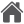

<ion-tabs>
  <!-- Tab Bar -->
  <ion-tab-bar slot="bottom">
    <ion-tab-button tab="eventos" routerLink="/eventos">
      
      <ion-label>Eventos</ion-label>
    </ion-tab-button>
    <ion-tab-button tab="buscar" routerLink="/buscar">
      
      <ion-label>Buscar</ion-label>
    </ion-tab-button>
    <ion-tab-button tab="home" routerLink="/homeusuario">
      
      <ion-label>Home</ion-label>
    </ion-tab-button>
    <ion-tab-button tab="puntos" routerLink="/puntos">
      
      <ion-label>Puntos</ion-label>
    </ion-tab-button>
    <ion-tab-button tab="perfil" routerLink="/perfil">
      
      <ion-label>Perfil</ion-label>
    </ion-tab-button>
  </ion-tab-bar>
</ion-tabs>
